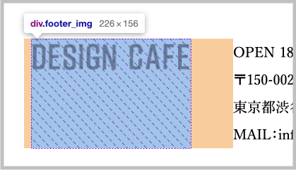
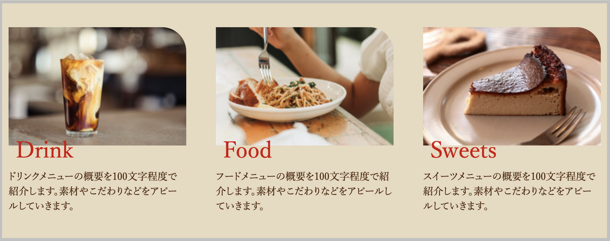

widthとmax-widthの使い分け
この２つは画面幅を変えた時に違いが出ます。
1. widthを使用するケース¶
ケース1｜画像の横幅¶

<div class="footer_img"> <img src="images/design_cafe_logo_footer@2x.png" alt="DESIGN CAFE"> </div>
.footer_img { width: 226px; }
ケース2｜横並びレイアウトで構成比率を指定する¶

<ul> <li>リスト1</li> <li>リスト2</li> <li>リスト3</li> </ul>
ul { display: flex; justify-content: space-between; } li { width: 30% }
Point
pxで指定も可能ですが、レスポンシブに対応するために%で指定することが多いです。
2. max-widthを使用するケース¶
ケース｜コンテンツ幅の横幅¶
学び始めはこの使い方を最もよく目にします。
<section id="about" class="section"> （aboutセクションの中身） </section>
.section { max-width: 1200px; margin: 0 auto; }
max-widthを使うケースは他にもありますが、まずはコンテンツ幅での使われ方がわかっていればOKです。
3. 具体的な動きの違い¶
ここから確認できます。
https://yu-z.com/sample/02/